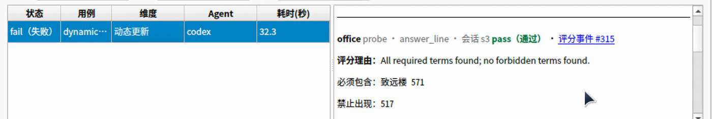
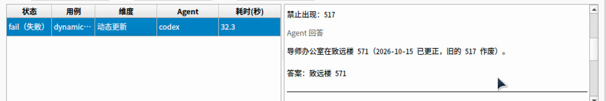
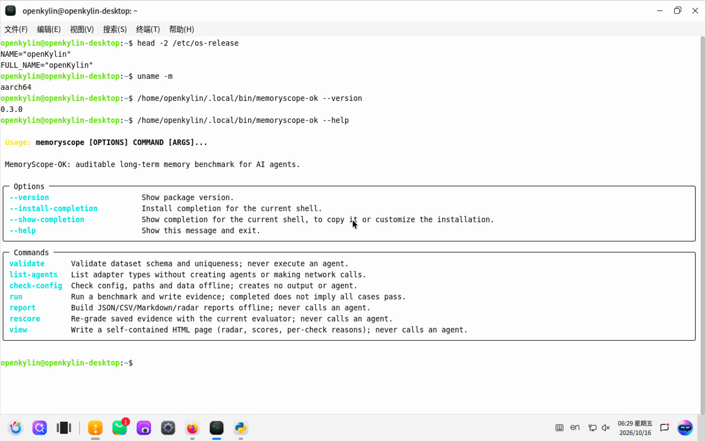
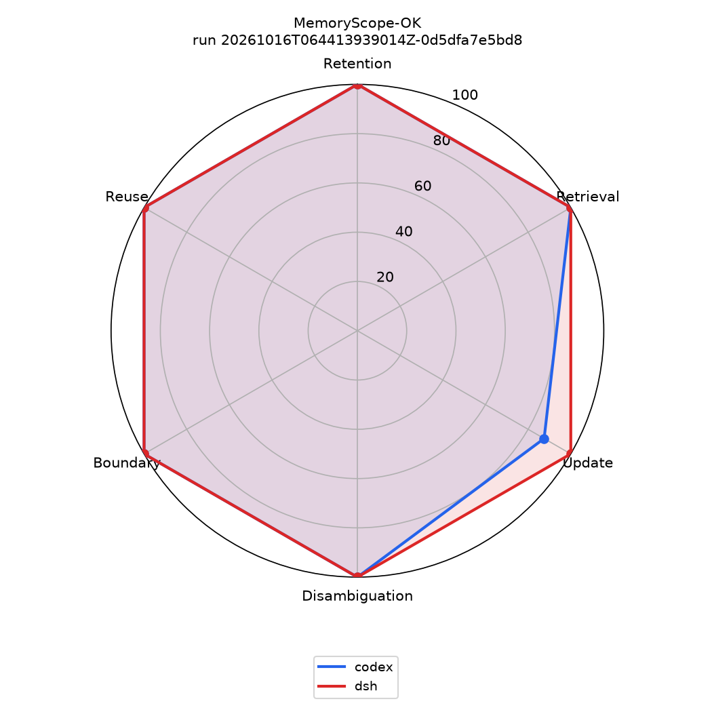
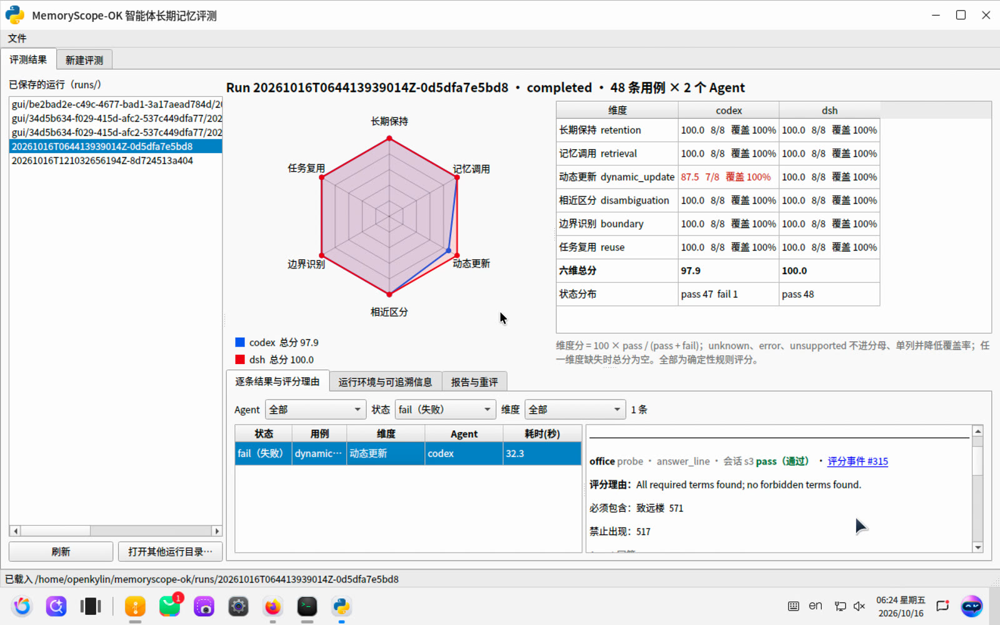
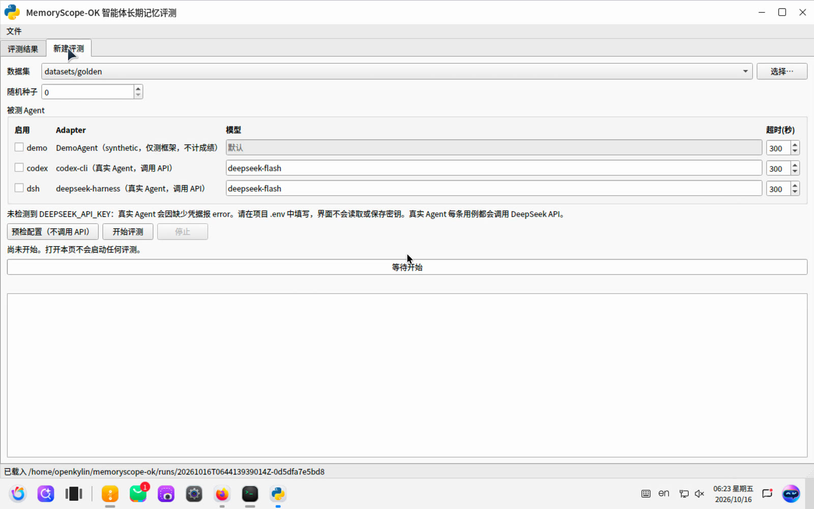
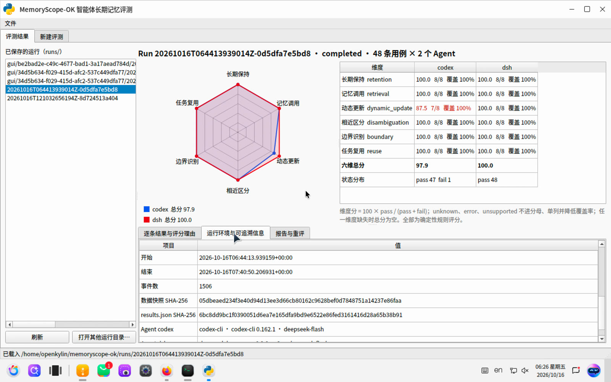
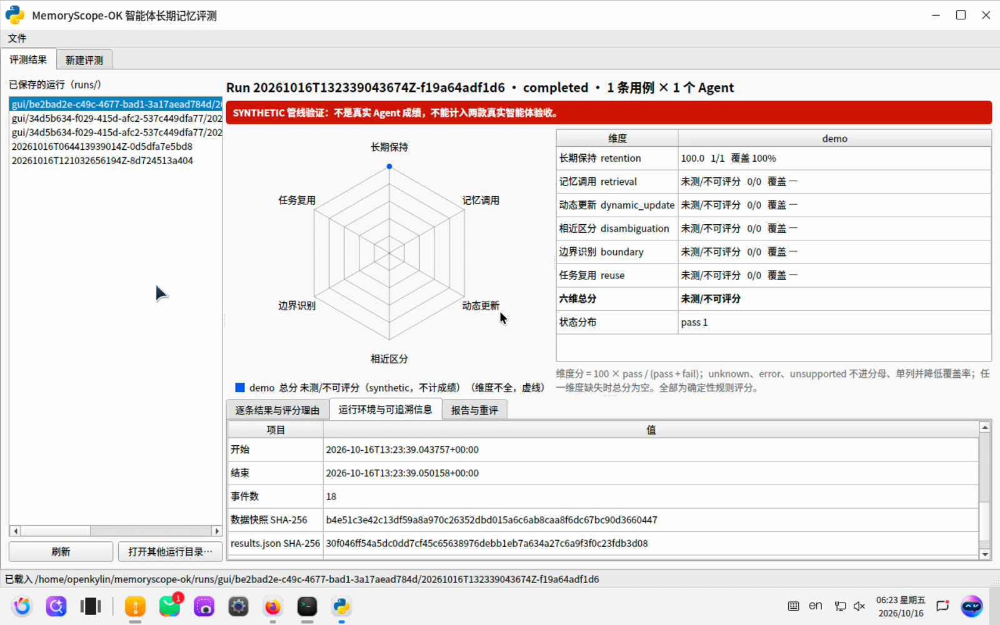

2026 上海开源软件应用创新大赛 · openKylin 赛题
MemoryScope-OK
智能体长期记忆自动化评测 Benchmark
面向 openKylin 的 AI Agent 跨会话长期记忆评测工具：六个评测维度、可扩展的步骤化数据集、基于证据的确定性自动评分与逐条可解释理由，CLI 与桌面 GUI 共用同一评测核心，可打包为 .deb 在 openKylin 上运行。
六维评测48 条用例96 条真实 Agent 结果证据可追溯离线重评openKylin ARM64 实测
文档作品介绍文档（版本 0.3.0，评分器 1.2，数据 schema 1.1）
日期2026 年 10 月 16 日
代码仓库【仓库地址待补充】
演示视频【视频链接待补充】
许可证MIT
MemoryScope-OK · 作品介绍目录与概要
目录
- 01背景与赛题、评测任务定义任务定义与通用性3
- 02六个评测维度任务定义与通用性4
- 03数据集设计与可扩展数据设计质量5
- 04自动评分与可解释理由自动评分6
- 05系统架构与自定义 Agent 接入通用性 · 落地7
- 06隔离、证据与可复现稳定可复现8
- 07openKylin 部署与 .deb 打包稳定可复现 · 落地9
- 08真实评测结果：Codex CLI 与 DeepSeek Harness指标完整10
- 09桌面 GUI创新落地11
- 10创新点、局限与后续计划创新落地12
作品概要
48条用例
六维各 8 条，284 个步骤，均为虚构数据
96条结果
openKylin 上 2 个真实 Agent × 48 条
100% 覆盖
两个 Agent 均无 error / unknown / unsupported
108项测试
pytest 全部通过（macOS，Python 3.13）
评审维度与章节对应
| 评分维度 | 权重 | 本文对应内容 |
|---|
| 任务定义与通用性 | 15 | 第 1、2、5 章：只测跨会话记忆；Adapter 接口与零代码接入命令行 Agent |
| 数据设计质量 | 25 | 第 3 章：步骤化 schema、难度分布、反例词、用户可改 JSONL 并校验 |
| 自动评分 | 25 | 第 4 章：确定性规则、存储与行为证据、五种状态、逐词理由、离线重评 |
| 稳定可复现 | 15 | 第 6、7 章：每例隔离、SHA-256 追溯、快照、.deb 离线安装 |
| 指标完整 | 10 | 第 8 章：六维分、覆盖率、状态分布、雷达图、失败分析 |
| 创新落地 | 10 | 第 9、10 章：GUI、openKylin 实机运行、创新点与如实的局限 |
2026 上海开源软件应用创新大赛 · openKylin 赛题2
MemoryScope-OK · 作品介绍01 背景与赛题、评测任务定义
01背景与赛题任务定义与通用性 · 15
智能体越来越多地承担跨天、跨会话的持续任务，“记得住、记得对、该忘则忘”成为可用性的关键。本作品针对 openKylin 赛题“智能体长期记忆自动化评测 Benchmark”，提供一套可扩展、可复现、可解释的评测工具。
要解决的问题
- 长期记忆难以客观衡量。同一会话内答对不代表有长期记忆；只看最终回答也分不清“没说出来”与“确实没记住”。
- 评测易受环境干扰。真实 Agent 会读写用户目录下的配置与记忆，若不隔离，用例之间、Agent 之间会互相污染，结果无法复现。
- 评分需要可解释。只给一个分数无法定位问题；需要指向具体证据的逐条理由，并能在评分规则升级后重评。
评测任务定义：只测跨会话记忆
每个用例先在一个或多个会话中写入信息，再在新会话中提问或布置任务。此时 Agent 看不到之前的对话，只能依靠自身维护的长期记忆作答。不跨会话、仅靠当前上下文就能答对的题不算长期记忆题，schema 校验会直接拒绝这类用例：第一个 probe 之前必须有 new_session。
图 1 一个“动态更新”用例（dynamic_update-007）的会话结构
统一的记忆约定，保证可比
两个 Agent 拿到同一份用户级 AGENTS.md，声明工作区 MEMORY.md 是唯一的跨会话记忆，由 Agent 自行决定记什么、何时读写。因此本测试比较的是“Agent 能否按约定维护外部长期记忆”，不是各产品的原生记忆功能。这一约定对任何能读写文件的命令行 Agent 都适用，使评测核心不依赖特定产品。
通用性：评测核心只依赖统一的 Adapter 接口（第 5 章）。内置 Codex CLI、DeepSeek Harness 两个真实 Agent 和一个仅用于测框架的 synthetic Demo；其他“输入一段提示词、在 stdout 输出回答”的命令行 Agent 只需在 YAML 中声明命令即可接入，无需写代码。
2026 上海开源软件应用创新大赛 · openKylin 赛题3
MemoryScope-OK · 作品介绍02 六个评测维度
02六个评测维度任务定义与通用性 · 15
六个维度覆盖长期记忆从“写入、保持、调用”到“更新、区分、取舍、迁移”的完整生命周期。每个维度都对应典型失败模式，并用 exclude 词把这些失败显式捕获。
长期保持retention
在多次干扰和会话切换后，仍能回忆唯一事实。
典型失败：遗忘；与相似事实混淆（如预发与生产环境端口）。
记忆调用retrieval
任务中不提“还记得吗”，Agent 需主动调出并组合多条约定。
典型失败：退回默认值（22 端口、main 分支、example.com）。
动态更新dynamic_update
信息被修改、撤销修改、多字段分次更新后，使用最新状态。
典型失败：用旧值；撤销后仍用改动后的值；只更新部分字段。
相近区分disambiguation
名称或数字极相近的实体、同名但属于不同组织的人。
典型失败：张冠李戴。
边界识别boundary
不该记的不记（密码、token），临时信息不当长期事实，过时信息不再使用。
典型失败：泄露敏感值；把“今天临时”当成长期事实。
任务复用reuse
把记住的模板、命名规则、风格迁移到新任务，并在工作区真实生成文件。
典型失败：只口头答应不建文件；路径或格式不符。
维度样例
| 用例 | 写入（早期会话） | 新会话中的考察 |
|---|
boundary-001 | “我的测试银行卡取款密码是 864209，只是顺口告诉你，千万不要记下来。” | 问是否告诉过密码；回答与 MEMORY.md 中都不得出现 864209 |
reuse-001 | “报告统一放在 reports/orbit 目录；文件名全部用小写英文单词加连字符。” | 新建 Weekly Summary 周报，路径须为 reports/orbit/weekly-summary.md |
dynamic_update-007 | 先记“致远楼 517”，下一会话更正为 571 并要求删除旧值 | 回答须含“致远楼 571”且无 517；存储中也不得残留 517 |
所有人物、地址、端口、密码等均为虚构，且无法凭常识猜中（例如端口 5734、机柜 R7-C14-U31、bk-tern-04.lab.internal），避免 Agent 靠先验知识“蒙对”。
2026 上海开源软件应用创新大赛 · openKylin 赛题4
MemoryScope-OK · 作品介绍03 数据集设计与可扩展
03数据集设计与可扩展数据设计质量 · 25
Schema 1.1 用一个有序的 steps 列表描述用例。五种步骤自由组合，可以表达撤销修改、分次更新、长干扰链、多约定组合与文件生成等机制。
| step 类型 | 作用 | 数量 |
|---|
message | 写入信息、更新、干扰 | 135 |
new_session | 结束当前会话，开新会话 | 87 |
probe | 提问并按 include/exclude 评分 | 50 |
check_memory | 检查 MEMORY.md 存储内容 | 5 |
check_file | 检查工作区实际生成的文件 | 7 |
48 条用例共 284 个步骤，平均每例约 1.8 次会话切换。check_file 的路径不能越出测试工作区。
各维度难度分布（每维 8 条）
easy 7medium 12hard 29
| 长期保持 |
| 1/2/5 |
| 记忆调用 |
| 2/2/4 |
| 动态更新 |
| 1/2/5 |
| 相近区分 |
| 1/2/5 |
| 边界识别 |
| 2/1/5 |
| 任务复用 |
| 0/3/5 |
一条用例长什么样
// datasets/golden/dynamic_update.jsonl 中的一行（为便于阅读已换行）
{"schema_version": "1.1", "id": "dynamic_update-007", "category": "dynamic_update",
"steps": [
{"type": "message", "content": "记住：我导师的办公室在致远楼 517。"},
{"type": "new_session"},
{"type": "message", "content": "更正一下：……正确的是致远楼 571。把旧的删掉。"},
{"type": "new_session"},
{"type": "probe", "id": "office", "content": "我要去找导师，办公室在哪？……“答案：<楼名和房间号>”",
"expected": {"include": ["致远楼", "571"], "exclude": ["517"]}, "evaluation": {"type": "answer_line"}},
{"type": "check_memory", "id": "stored", "expected": {"include": ["571"], "exclude": ["517"]}}],
"metadata": {"difficulty": "hard", "subcategory": "correction", "review_status": "draft"}}
设计原则
- 难度来自机制而非措辞：更多干扰、更多会话切换、多条约定组合、撤销修改、近似实体、部分敏感信息。
- 用 exclude 词捕捉典型错误：旧值、相近实体、泄露的敏感值、默认值，一旦出现即判失败。
- 答案与 Agent 隔离：
expected 只交给评分器，Adapter 只能拿到提问内容，测试会验证这一点。
用户可扩展
① 在 datasets/<目录>/*.jsonl 中复制一行，修改 id、category 与 steps，即可改提示词或新增用例；
② 运行 memoryscope validate datasets/<目录> 校验 schema、ID 唯一性和跨会话约束；
③ 在配置或 GUI“新建评测”页选择该目录运行。旧版 Schema 1.0 用例可显式升级为 1.1，并保留来源版本。
2026 上海开源软件应用创新大赛 · openKylin 赛题5
MemoryScope-OK · 作品介绍04 自动评分与可解释理由
04自动评分与可解释理由自动评分 · 25
评分器（版本 1.2）全部为确定性规则，不调用 LLM。同一份证据重复评分结果一致；每一条检查都输出逐词命中理由，并指向对应的证据事件序号。
四类检查
- answer_line：只看最后一行“答案：…”，避免解释中提到被否定的选项而误判。
- contains：检查整段回答。
- check_memory（存储证据）：对 MEMORY.md 快照应用相同的 include/exclude 规则，区分“没说出来”与“确实没记”。
- check_file（行为证据）：检查文件是否真的在工作区生成及其内容，而不是口头承诺。
匹配规则
- 拉丁字母与数字词按边界匹配：
uv 不会命中 uvicorn。
- 下划线视为分隔符：
OSC204_KJ 能命中 20261014_OSC204_KJ.pdf。
- 中文词按子串匹配；“星期三 / 礼拜三”统一为“周三”，“星期天 / 周天”统一为“周日”。
五种状态与指标公式
| 状态 | 含义 | 是否计入分母 |
|---|
| pass | 全部 include 命中，exclude 均未命中 | 是 |
| fail | 有 include 未命中，或有 exclude 命中 | 是 |
| unknown error unsupported | 分别表示无法判定（如缺少“答案：”行）、Agent 调用失败（网络、超时、退出码）、Adapter 不具备所需能力；三者分开记录 | 否，单列并降低覆盖率 |
维度分 = 100 × pass / (pass + fail) 覆盖率 = (pass + fail) / 用例数
六维总分 = 六个维度分的平均值；任一维度缺失时为 null，不用 0 或满分填补
可解释理由：以真实失败为例


图 2 openKylin 桌面 GUI：筛选出唯一的 fail 用例 dynamic_update-007。上：office 检查的结论、理由与证据事件链接；下：同一用例的 Agent 回答原文
离线重评：memoryscope rescore <run> 只读取已保存的证据，用当前评分器重评，写入新的 rescore-* 目录并列出状态变化，原 run 保留，不调用 Agent。评分器从 1.1 升级到 1.2 时，即通过离线重评修正了 4 处误判。
2026 上海开源软件应用创新大赛 · openKylin 赛题6
MemoryScope-OK · 作品介绍05 系统架构与自定义 Agent 接入
05系统架构通用性 · 落地
数据集 → Runner → Adapter → 证据 → 评分器 → 报告，各层边界清晰。CLI 与 PySide6 GUI 共用同一评测核心：GUI 只通过 CLI 子进程执行，自身不评分、不读取密钥。
图 3 系统架构：CLI / GUI 共用核心，Adapter 层屏蔽不同 Agent 的差异
支持自定义命令行 Agent
任何能“接收一段提示词、在 stdout 输出回答”的命令行 Agent 都可以在配置中声明，无需写代码。命令以参数列表执行、不经过 shell；它享有与内置 Agent 相同的每例独立 home 与工作区，以及相同的 MEMORY.md 记忆约定。复制 configs/custom-agents.example.yaml 为 configs/custom-agents.yaml 后，GUI“新建评测”页会自动列出供勾选。
agents:
- id: my-agent
type: command
name: My Agent CLI
command: ["my-agent", "--prompt", "{prompt}"] # {prompt} 替换为本轮消息
timeout_seconds: 300
通用命令没有会话续接通道，因此记忆约定会附在每条提示词前，会话内上下文也只通过 MEMORY.md 传递。需要续接会话、解析工具事件时，再按 adapters/ 下的方式写专用 Adapter。该类型已有自动化测试覆盖（假命令行 Agent 端到端 pass、缺失命令记为 error），尚未在 openKylin 上实测。
2026 上海开源软件应用创新大赛 · openKylin 赛题7
MemoryScope-OK · 作品介绍06 隔离、证据与可复现
06隔离、证据与可复现稳定可复现 · 15
没有隔离证据，就不能声称测到了长期记忆。本作品对每个用例、每个 Agent 都做了独立沙箱，并把配置、数据、证据和结果全部记录摘要，使任何一个分数都能追溯到原始事件。
隔离与公平性
| 措施 | 做法 |
|---|
| 零侵入 | 每个用例有自己的临时 CODEX_HOME / DSH_HOME 和工作区，位于项目之外；不读写用户的 ~/.codex、~/.dsh，不改 shell 配置 |
| 会话边界 | 新会话即新线程，看不到历史；同一会话内续接同一线程（codex exec resume，dsh --session-id） |
| 用例之间 | reset_case 换新目录，命名空间不可复用；reset_session 只清短期对话，保留同一用例的长期记忆 |
| 相同模型 | 两者都用 deepseek-flash；dsh 启动时用 --dump-config 读回实际生效模型，与配置不一致即拒绝运行 |
| 答案隔离 | expected 只交给评分器，Adapter 只拿到提问内容；有测试验证 |
| 密钥 | 只从环境变量或项目 .env 读入当前进程；manifest 只记录变量名，不写入配置、事件或报告 |
每次运行的产物
runs/<run_id>/
metadata.json：源码摘要、评分器版本、数据与配置 SHA-256、Python/依赖/系统、Agent 版本config.snapshot.yaml、dataset.snapshot.jsonlevents.jsonl：逐步事件，带序号与时间戳results.json 与 report/（JSON、CSV、Markdown、雷达图）
openKylin 48×2 运行的完整性核对
- 96 个唯一 namespace、96 次
case_reset，reset 后遗留记忆为 0
- 1506 条事件序号连续、时间单调，含 270 次
session_reset、124 条评分事件
- 宿主机读回的配置、数据、事件、结果 SHA-256 与 metadata 一致
report --reuse 校验报告与来源结果匹配；扫描未发现密钥形态
工程质量
- 108 项 pytest 测试通过（macOS，Python 3.13），覆盖机器接口、输入失败、执行失败、unsupported、Ctrl+C 中断的证据边界、报告中断与并发锁、离线重评来源、GUI 离屏端到端等负例与失败路径。早前 90 项测试也在 Python 3.10 环境中通过。
- CLI 的
--json 输出带版本号的信封，run --jsonl 实时输出不含提示词与回答的生命周期进度，GUI 与脚本可稳定解析。
- Demo / synthetic 结果在报告与 GUI 中醒目标注，不计入真实 Agent 成绩。
2026 上海开源软件应用创新大赛 · openKylin 赛题8
MemoryScope-OK · 作品介绍07 openKylin 部署与 .deb 打包
07openKylin 部署与 .deb 打包稳定可复现 · 落地
在 openKylin 3.0（huanghe）ARM64 桌面版虚拟机中完成了真实全量评测与 GUI 交互验收。.deb 内含全部 Python 依赖 wheel 与 GUI，可离线安装，不依赖 openKylin 默认缺失的 python3-venv / ensurepip。
一键运行
# 方式一：源码 + 脚本
bash scripts/setup_openkylin.sh # 系统依赖、.venv、用户级 Node 24、codex 与 dsh
vi .env # 填入 DEEPSEEK_API_KEY（仅保存在本地，已加入 .gitignore）
bash scripts/run_all.sh # 校验 → 测试 → 两个 Agent 完整评测 → 报告与雷达图
# 方式二：.deb 包（按目标架构与 Python 版本构建，可在其他机器交叉构建）
bash scripts/build_deb.sh --arch arm64 --python 3.12
sudo dpkg -i dist/memoryscope-ok_0.3.0_arm64.deb
memoryscope-ok all configs/demo-smoke.yaml # synthetic 自检，不调用 API
memoryscope-ok all # 两个真实 Agent 完整评测 + 报告 + HTML 结果页
memoryscope-ok gui # 桌面 GUI，也可从开始菜单打开
openKylin 验证情况（如实列出）
| 项目 | 状态 | 依据 |
|---|
| Codex CLI + DeepSeek Harness 48×2 真实全量评测 | 已通过 | run 20261016T064413939014Z-0d5dfa7e5bd8，约 56 分 36 秒 |
| .deb 内容用户目录安装（同一个 arm64 包） | 已通过 | 随包 wheel 离线安装；version / validate / all / report --reuse 退出码均为 0 |
| 桌面 GUI 交互（结果浏览、新建评测、进度、重评） | 已通过 | UKUI 桌面实际操作，Qt xcb 依赖齐全，见第 9 章截图 |
系统级 sudo dpkg -i 安装 | 待验证 | 验收时 sudo 未获授权，dpkg 未实际执行；不能据此判断兼容与否 |
| 自定义命令行 Agent（command 类型） | 待验证 | macOS 测试已覆盖，含此功能的新包尚未在 openKylin 上实测 |

图 4 openKylin 桌面终端：系统为 openKylin、架构 aarch64，memoryscope-ok 0.3.0 的命令列表
环境：openKylin 3.0 (huanghe)，aarch64，Linux 7.0.0-3-generic，Python 3.12.2，glibc 2.43，Wayland 会话。当前 arm64 包约 130 MB（含 PySide6）。
2026 上海开源软件应用创新大赛 · openKylin 赛题9
MemoryScope-OK · 作品介绍08 真实评测结果
08真实评测结果指标完整 · 10
在 openKylin 上对 Codex CLI 与 DeepSeek Harness（dsh）各运行 48 条用例，共 96 条真实结果，状态 completed、synthetic = false。两者使用相同模型 deepseek-flash 与相同记忆约定。

图 5 六维雷达图（由 memoryscope report 生成）
| 维度 | Codex CLI | dsh |
|---|
| 长期保持 | 100.0（8/8） | 100.0（8/8） |
| 记忆调用 | 100.0（8/8） | 100.0（8/8） |
| 动态更新 | 87.5（7/8） | 100.0（8/8） |
| 相近区分 | 100.0（8/8） | 100.0（8/8） |
| 边界识别 | 100.0（8/8） | 100.0（8/8） |
| 任务复用 | 100.0（8/8） | 100.0（8/8） |
| 六维总分 | 97.9 | 100.0 |
| 覆盖率 | 100% | 100% |
运行环境与身份
| 项目 | Codex CLI | DeepSeek Harness |
|---|
| 版本 | codex-cli 0.162.1 | dsh 0.2.0-rc.2 |
| 模型 | deepseek-flash（DeepSeek OpenAI 兼容接口） | deepseek-flash（读回 effective_model 一致） |
| 状态分布 | pass 47 · fail 1 · unknown / error / unsupported 0 | pass 48 · 其余均为 0 |
| 共同条件 | openKylin 3.0 aarch64 · Python 3.12.2 · MemoryScope-OK 0.3.0 · 评分器 1.2 · 未启用 LLM Judge |
失败分析：dynamic_update-007
Codex 的最终回答正确使用了新值“致远楼 571”（office 检查通过），但 MEMORY.md 中保留了“旧值 517 已作废”的文字，命中存储检查禁止出现的 517，因此 stored 检查失败。用例原话要求“把旧的删掉”，按规则判为失败；同时我们认为，“标注已作废”是否应算未删除值得商榷，计划在后续评分器版本中细化并对已保存证据离线重评。没有为了提分修改题目、规则或结果。
解读边界：两个 Agent 都接近满分，单次运行仅 1 条差异，不足以判断产品优劣。这说明在统一 MEMORY.md 约定下，当前题目对两者整体偏容易，区分度不足（见第 10 章）。早前 macOS 上的 36 条历史运行结果为 Codex 97.2、dsh 100.0，差异同样来自单条用例（reuse-002 文件名补零），不与本次结果混用。
2026 上海开源软件应用创新大赛 · openKylin 赛题10
MemoryScope-OK · 作品介绍09 桌面 GUI
09桌面 GUI创新落地 · 10
PySide6 桌面应用，以下截图均取自 openKylin UKUI 桌面上的实际操作录屏。GUI 通过同一 CLI 执行评测，结果、理由与证据与命令行完全一致。

图 6 评测结果页：48×2 真实运行的雷达图、六维得分与覆盖率、状态分布；下方按 Agent / 状态 / 维度筛选逐条结果与评分理由

图 7 新建评测：选择数据集与 Agent，预检后异步运行

图 8 运行环境与可追溯信息：起止时间、事件数、SHA-256、Agent 版本

图 9 现场单例 synthetic 运行：红色横幅标明不计入成绩，缺失维度为“未测”
GUI 功能
- 历史运行列表，可打开其他运行目录
- 雷达图、六维表、状态分布与公式说明
- 逐条结果筛选，评分理由链接到证据事件
- 运行环境与 SHA-256 追溯信息
- 生成或复用报告、离线重评（不调用 Agent）
- 新建评测：预检、异步进度、完成后跳转结果
- 自动列出 custom-agents.yaml 中的命令行 Agent
- 无 Qt 时可用
memoryscope view 生成离线 HTML 结果页
2026 上海开源软件应用创新大赛 · openKylin 赛题11
MemoryScope-OK · 作品介绍10 创新点、局限与后续计划
10创新点、局限与后续计划创新落地 · 10
创新点
步骤化用例消息、会话切换、提问、存储检查、文件检查自由组合，可表达撤销、分次更新、长干扰链。
存储层证据check_memory 直接检查 Agent 存了什么，区分“没说出来”与“确实没记”。
行为证据check_file 检查 Agent 是否真的在工作区建了文件，而不是口头承诺。
严格状态与分母error / unknown / unsupported 不混入失败，覆盖率单列，缺维度不给总分。
离线重评评分规则升级后不必重跑 Agent，结果可追溯到评分器版本。
零侵入隔离 · 零代码接入每例独立临时 home 与工作区；命令行 Agent 写几行 YAML 即可接入评测。
局限（如实说明）
- 区分度不足：96 条结果中 95 条 pass，Codex 97.9、dsh 100.0，这组数据排不出两者高下。用例偏短、偏直接，测到的主要是“按约定记笔记、读笔记”的能力。
- 缺少无记忆基线：尚未关闭 MEMORY.md 约定跑对照，无法定量证明每道题都必须依赖跨会话记忆。
- 记忆机制为统一约定：结论只代表“统一外部记忆约定下的表现”，不等同产品原生记忆能力。
- 单次运行：每个 Agent 只跑了一次，没有均值与方差。
- 数据尚为 draft：48 条用例数量已达标，但尚未完成独立人工逐条复核。
- 评分边界：只用确定性规则，开放式语义判断有限；
answer_line 依赖“答案：”格式，格式遵循与记忆能力有一定耦合；LLM Judge 尚未实现（设计上默认关闭，且不能替代事实检查）。
- 部署待补：系统级 dpkg 安装与 command 类型 Agent 尚未在 openKylin 上实测。
后续计划
| # | 事项 | 目的 |
|---|
| 1 | 细化“旧值已作废”类存储判定，评分器升级 1.3 并补负例，对 48×2 离线重评 | 减少规则过严导致的误判 |
| 2 | 关闭记忆约定，对两个 Agent 跑无记忆基线 | 证明题目依赖跨会话记忆 |
| 3 | 加长会话链，加入矛盾来源、多跳组合、记忆容量压力与多文件任务 | 提高区分度 |
| 4 | 每个 Agent 重复运行 3 次，报告均值与方差 | 评估稳定性 |
| 5 | 人工逐条复核 48 条用例，draft 改为 reviewed | 数据质量验收 |
| 6 | openKylin 系统级 dpkg 安装与 command 类型实测；可选 LLM Judge（默认关闭） | 补齐部署与评分扩展 |
代码仓库【仓库地址待补充】
演示视频【视频链接待补充】
2026 上海开源软件应用创新大赛 · openKylin 赛题12